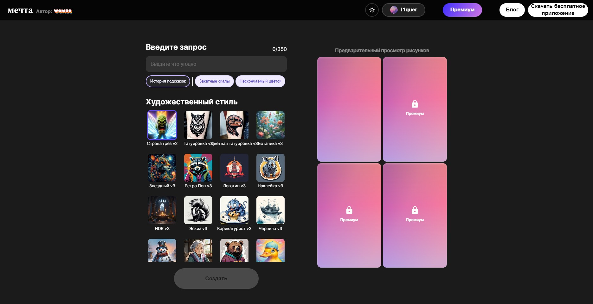

Dream (by Wombo)
Dream - это нейросеть, которая позволяет создавать иллюстрации по текстовому запросу или на основе картинок-референсов. Полученные изображения пользователи используют в качестве обоев на телефон, обложек для плейлистов и прочих целей.
Многие пользователи выбирают Dream из-за высокой скорости создания рисунков, широкого выбора различных стилей в бесплатной версии, а также доступной регистрации в сервисе по сравнению с конкурентами.
